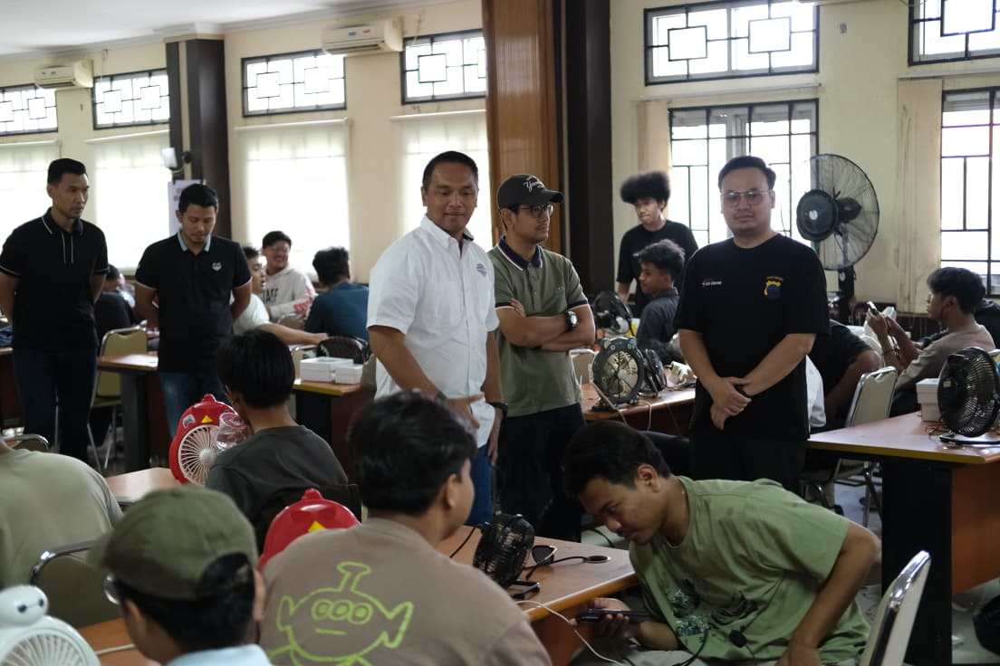

ASEAN Foundation × Polda Jateng
Pelatihan AI Readiness Pelajar SMA
Program kolaboratif bersama ASEAN Foundation dan Polda Jawa Tengah memperkuat literasi AI pelajar & masyarakat — campaign awareness, in-depth training, dan Training of Trainers. Peran Senopati: pelaksana edukasi & pendamping peserta.
142.288penerima manfaat · 2026